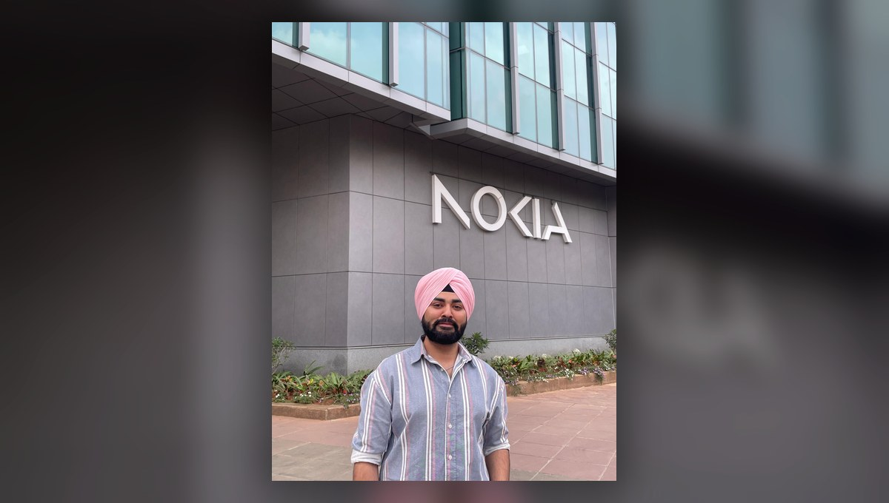

3+ years in telecom R&D
From fault traces to production confidence.
C/C++, Python, Linux, validation pipelines, production debugging, and OPG-layer ownership taught me to trace the full system and protect quality before release.
DebuggingAutomationOwnership